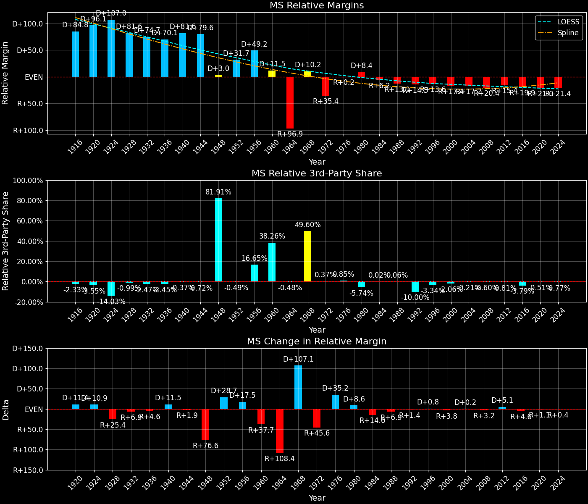
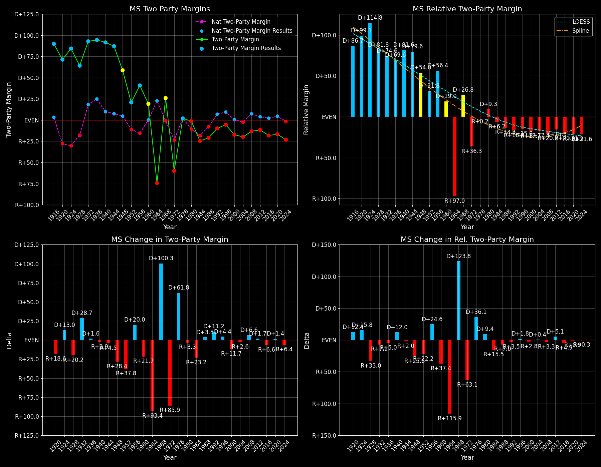

Mississippi (MS) — Statewide

Margins · 3rd-Party share · Pres. deltas

Relative margins · Relative 3rd-Party · Rel. deltas
Mississippi (MS) — Total Data
| Year | D | R | State Margin | Nat. Margin | Rel. Margin | Total votes | EVs |
|---|---|---|---|---|---|---|---|
| 1924 | 100,474(89.3%) | 8,494(7.6%) | D+81.8 | R+25.2 | D+107.0 | 112,462 | 10 |
| 1928 | 124,539(82.1%)(Δ 24,065) | 27,153(17.9%)(Δ 18,659) | D+64.2(Δ R+17.6) | R+17.4(Δ D+7.8) | D+81.6(Δ R+25.4) | 151,692(Δ 39,230) | 10 |
| 1932 | 140,168(96.0%)(Δ 15,629) | 5,180(3.5%)(Δ -21,973) | D+92.4(Δ D+28.2) | D+17.8(Δ D+35.2) | D+74.7(Δ R+6.9) | 146,034(Δ -5,658) | 9 |
| 1936 | 157,318(97.1%)(Δ 17,150) | 4,443(2.7%)(Δ -737) | D+94.3(Δ D+1.9) | D+24.3(Δ D+6.5) | D+70.1(Δ R+4.6) | 162,090(Δ 16,056) | 9 |
| 1940 | 168,267(95.7%)(Δ 10,949) | 7,364(4.2%)(Δ 2,921) | D+91.5(Δ R+2.8) | D+10.0(Δ R+14.3) | D+81.6(Δ D+11.5) | 175,824(Δ 13,734) | 9 |
| 1944 | 168,479(93.6%)(Δ 212) | 11,601(6.4%)(Δ 4,237) | D+87.1(Δ R+4.4) | D+7.5(Δ R+2.5) | D+79.6(Δ R+1.9) | 180,080(Δ 4,256) | 9 |
| 1948 | 19,384(10.1%)(Δ -149,095) | 5,043(2.6%)(Δ -6,558) | D+7.5(Δ R+79.7) | D+4.5(Δ R+3.0) | D+3.0(Δ R+76.6) | 192,190(Δ 12,110) | 9 |
| 1952 | 172,566(60.4%)(Δ 153,182) | 112,966(39.6%)(Δ 107,923) | D+20.9(Δ D+13.4) | R+10.9(Δ R+15.3) | D+31.7(Δ D+28.7) | 285,532(Δ 93,342) | 8 |
| 1956 | 144,498(58.2%)(Δ -28,068) | 60,685(24.5%)(Δ -52,281) | D+33.8(Δ D+12.9) | R+15.4(Δ R+4.5) | D+49.2(Δ D+17.5) | 248,149(Δ -37,383) | 8 |
| 1960 | 108,362(36.3%)(Δ -36,136) | 73,561(24.7%)(Δ 12,876) | T+2.6(Δ R+22.1) | D+0.2(Δ D+15.6) | D+11.5(Δ R+37.7) | 298,171(Δ 50,022) | 8 |
| 1964 | 52,618(12.9%)(Δ -55,744) | 356,528(87.1%)(Δ 282,967) | R+74.3(Δ R+86.0) | D+22.6(Δ D+22.4) | R+96.9(Δ R+108.4) | 409,146(Δ 110,975) | 7 |
| 1968 | 150,644(23.0%)(Δ 98,026) | 88,516(13.5%)(Δ -268,012) | T+40.4(Δ D+83.8) | R+0.7(Δ R+23.3) | D+10.2(Δ D+107.1) | 654,509(Δ 245,363) | 7 |
| 1972 | 126,782(19.6%)(Δ -23,862) | 505,125(78.2%)(Δ 416,609) | R+58.6(Δ R+68.1) | R+23.1(Δ R+22.4) | R+35.4(Δ R+45.6) | 645,963(Δ -8,546) | 7 |
| 1976 | 381,309(49.6%)(Δ 254,527) | 366,846(47.7%)(Δ -138,279) | D+1.9(Δ D+60.5) | D+2.1(Δ D+25.2) | R+0.2(Δ D+35.2) | 769,360(Δ 123,397) | 7 |
| 1980 | 429,281(48.1%)(Δ 47,972) | 441,089(49.4%)(Δ 74,243) | R+1.3(Δ R+3.2) | R+9.7(Δ R+11.8) | D+8.4(Δ D+8.6) | 892,620(Δ 123,260) | 7 |
| 1984 | 352,192(37.5%)(Δ -77,089) | 581,477(61.8%)(Δ 140,388) | R+24.4(Δ R+23.1) | R+18.2(Δ R+8.5) | R+6.2(Δ R+14.6) | 940,192(Δ 47,572) | 7 |
| 1988 | 363,921(39.1%)(Δ 11,729) | 557,890(59.9%)(Δ -23,587) | R+20.8(Δ D+3.6) | R+7.7(Δ D+10.5) | R+13.1(Δ R+6.9) | 931,527(Δ -8,665) | 7 |
| 1992 | 400,258(40.8%)(Δ 36,337) | 487,793(49.7%)(Δ -70,097) | R+8.9(Δ D+11.9) | D+5.6(Δ D+13.3) | R+14.5(Δ R+1.4) | 981,793(Δ 50,266) | 7 |
| 1996 | 394,022(44.1%)(Δ -6,236) | 439,838(49.2%)(Δ -47,955) | R+5.1(Δ D+3.8) | D+8.5(Δ D+3.0) | R+13.6(Δ D+0.8) | 893,857(Δ -87,936) | 7 |
| 2000 | 404,614(40.7%)(Δ 10,592) | 572,844(57.6%)(Δ 133,006) | R+16.9(Δ R+11.8) | D+0.5(Δ R+8.0) | R+17.4(Δ R+3.8) | 994,184(Δ 100,327) | 7 |
| 2004 | 458,094(39.8%)(Δ 53,480) | 684,981(59.5%)(Δ 112,137) | R+19.7(Δ R+2.8) | R+2.5(Δ R+3.0) | R+17.2(Δ D+0.2) | 1,152,145(Δ 157,961) | 6 |
| 2008 | 554,662(43.0%)(Δ 96,568) | 724,597(56.2%)(Δ 39,616) | R+13.2(Δ D+6.5) | D+7.3(Δ D+9.7) | R+20.4(Δ R+3.2) | 1,289,865(Δ 137,720) | 6 |
| 2012 | 562,949(43.8%)(Δ 8,287) | 710,746(55.3%)(Δ -13,851) | R+11.5(Δ D+1.7) | D+3.9(Δ R+3.4) | R+15.4(Δ D+5.1) | 1,285,584(Δ -4,281) | 6 |
| 2016 | 485,131(40.1%)(Δ -77,818) | 700,714(57.9%)(Δ -10,032) | R+17.8(Δ R+6.3) | D+2.1(Δ R+1.8) | R+19.9(Δ R+4.6) | 1,209,357(Δ -76,227) | 6 |
| 2020 | 539,398(41.1%)(Δ 54,267) | 756,764(57.6%)(Δ 56,050) | R+16.5(Δ D+1.3) | D+4.5(Δ D+2.4) | R+21.0(Δ R+1.1) | 1,313,759(Δ 104,402) | 6 |
| 2024 | 466,668(38.0%)(Δ -72,730) | 747,744(60.9%)(Δ -9,020) | R+22.9(Δ R+6.3) | R+1.5(Δ R+5.9) | R+21.4(Δ R+0.4) | 1,228,008(Δ -85,751) | 6 |
Column explanations
- Δ
- Change (delta) in the value from the previous election year.
- Year
- Election year.
- D
- Number of votes for the Democratic candidate (raw count(pct%)).
- R
- Number of votes for the Republican candidate (raw count(pct%)).
- State Margin
- Margin between the two major-party candidates, including third-party votes ((D - R)/total).
- Nat. Margin
- The national presidential margin for that year, including third-party votes ((D_total - R_total)/total_votes).
- Rel. Margin
- The presidential margin relative to the national presidential margin (Margin - Nat. Margin).
- Total votes
- Total voter turnout or ballots cast (when provided).
- EVs
- Number of electoral votes allocated to this state or unit.
Mississippi (MS) — Third-Party Data
| Year | D | R | Other votes | State 3rd-Party Share | 3rd-Party Nat. Share | 3rd-Party Rel. Share |
|---|---|---|---|---|---|---|
| 1924 | 100,474(89.3%) | 8,494(7.6%) | 3,494(3.1%) | 3.11% | 17.14% | -14.03% |
| 1928 | 124,539(82.1%)(Δ 24,065) | 27,153(17.9%)(Δ 18,659) | 0(0.0%) | 0.00% | 0.99% | -0.99% |
| 1932 | 140,168(96.0%)(Δ 15,629) | 5,180(3.5%)(Δ -21,973) | 686(0.5%) | 0.47% | 2.94% | -2.47% |
| 1936 | 157,318(97.1%)(Δ 17,150) | 4,443(2.7%)(Δ -737) | 329(0.2%) | 0.20% | 2.66% | -2.45% |
| 1940 | 168,267(95.7%)(Δ 10,949) | 7,364(4.2%)(Δ 2,921) | 193(0.1%) | 0.11% | 0.48% | -0.37% |
| 1944 | 168,479(93.6%)(Δ 212) | 11,601(6.4%)(Δ 4,237) | 0(0.0%) | 0.00% | 0.72% | -0.72% |
| 1948 | 19,384(10.1%)(Δ -149,095) | 5,043(2.6%)(Δ -6,558) | 167,763(87.3%) | 87.29% | 5.38% | 81.91% |
| 1952 | 172,566(60.4%)(Δ 153,182) | 112,966(39.6%)(Δ 107,923) | 0(0.0%) | 0.00% | 0.49% | -0.49% |
| 1956 | 144,498(58.2%)(Δ -28,068) | 60,685(24.5%)(Δ -52,281) | 42,966(17.3%) | 17.31% | 0.67% | 16.65% |
| 1960 | 108,362(36.3%)(Δ -36,136) | 73,561(24.7%)(Δ 12,876) | 116,248(39.0%) | 38.99% | 0.73% | 38.26% |
| 1964 | 52,618(12.9%)(Δ -55,744) | 356,528(87.1%)(Δ 282,967) | 0(0.0%) | 0.00% | 0.48% | -0.48% |
| 1968 | 150,644(23.0%)(Δ 98,026) | 88,516(13.5%)(Δ -268,012) | 415,349(63.5%) | 63.46% | 13.86% | 49.60% |
| 1972 | 126,782(19.6%)(Δ -23,862) | 505,125(78.2%)(Δ 416,609) | 14,056(2.2%) | 2.18% | 1.80% | 0.37% |
| 1976 | 381,309(49.6%)(Δ 254,527) | 366,846(47.7%)(Δ -138,279) | 21,205(2.8%) | 2.76% | 1.90% | 0.85% |
| 1980 | 429,281(48.1%)(Δ 47,972) | 441,089(49.4%)(Δ 74,243) | 22,250(2.5%) | 2.49% | 8.24% | -5.74% |
| 1984 | 352,192(37.5%)(Δ -77,089) | 581,477(61.8%)(Δ 140,388) | 6,523(0.7%) | 0.69% | 0.67% | 0.02% |
| 1988 | 363,921(39.1%)(Δ 11,729) | 557,890(59.9%)(Δ -23,587) | 9,716(1.0%) | 1.04% | 0.98% | 0.06% |
| 1992 | 400,258(40.8%)(Δ 36,337) | 487,793(49.7%)(Δ -70,097) | 93,742(9.5%) | 9.55% | 19.55% | -10.00% |
| 1996 | 394,022(44.1%)(Δ -6,236) | 439,838(49.2%)(Δ -47,955) | 59,997(6.7%) | 6.71% | 10.05% | -3.34% |
| 2000 | 404,614(40.7%)(Δ 10,592) | 572,844(57.6%)(Δ 133,006) | 16,726(1.7%) | 1.68% | 3.75% | -2.06% |
| 2004 | 458,094(39.8%)(Δ 53,480) | 684,981(59.5%)(Δ 112,137) | 9,070(0.8%) | 0.79% | 1.00% | -0.21% |
| 2008 | 554,662(43.0%)(Δ 96,568) | 724,597(56.2%)(Δ 39,616) | 10,606(0.8%) | 0.82% | 1.42% | -0.60% |
| 2012 | 562,949(43.8%)(Δ 8,287) | 710,746(55.3%)(Δ -13,851) | 11,889(0.9%) | 0.92% | 1.73% | -0.81% |
| 2016 | 485,131(40.1%)(Δ -77,818) | 700,714(57.9%)(Δ -10,032) | 23,512(1.9%) | 1.94% | 5.73% | -3.79% |
| 2020 | 539,398(41.1%)(Δ 54,267) | 756,764(57.6%)(Δ 56,050) | 17,597(1.3%) | 1.34% | 1.84% | -0.51% |
| 2024 | 466,668(38.0%)(Δ -72,730) | 747,744(60.9%)(Δ -9,020) | 13,596(1.1%) | 1.11% | 1.88% | -0.77% |
Column explanations
- Year
- Election year.
- D
- Number of votes for the Democratic candidate (raw count(pct%)).
- R
- Number of votes for the Republican candidate (raw count(pct%)).
- Other votes
- Number of votes for third-party (other) candidates (raw count(pct%)).
- State 3rd-Party Share
- Share of the vote received by third-party (other) candidates.
- 3rd-Party Nat. Share
- The national third-party share for that year (3rd-Party votes / total votes).
- 3rd-Party Rel. Share
- Third-party share relative to the national third-party share (3rd-Party share - Nat. 3rd-Party share).

Two-party margins · relative · deltas
Mississippi (MS) — Two-Party Data
| Year | D | R | 2-Party Margin | 2-Party Nat. Margin | 2-Party Rel. Margin | EVs |
|---|---|---|---|---|---|---|
| 1924 | 100,474(92.2%) | 8,494(7.8%) | D+84.4 | R+30.4 | D+114.8 | 10 |
| 1928 | 124,539(82.1%)(Δ 24,065) | 27,153(17.9%)(Δ 18,659) | D+64.2(Δ R+20.2) | R+17.6(Δ D+12.8) | D+81.8(Δ R+33.0) | 10 |
| 1932 | 140,168(96.4%)(Δ 15,629) | 5,180(3.6%)(Δ -21,973) | D+92.9(Δ D+28.7) | D+18.3(Δ D+35.9) | D+74.6(Δ R+7.2) | 9 |
| 1936 | 157,318(97.3%)(Δ 17,150) | 4,443(2.7%)(Δ -737) | D+94.5(Δ D+1.6) | D+24.9(Δ D+6.6) | D+69.6(Δ R+5.0) | 9 |
| 1940 | 168,267(95.8%)(Δ 10,949) | 7,364(4.2%)(Δ 2,921) | D+91.6(Δ R+2.9) | D+10.0(Δ R+14.9) | D+81.6(Δ D+12.0) | 9 |
| 1944 | 168,479(93.6%)(Δ 212) | 11,601(6.4%)(Δ 4,237) | D+87.1(Δ R+4.5) | D+7.5(Δ R+2.5) | D+79.6(Δ R+2.0) | 9 |
| 1948 | 19,384(79.4%)(Δ -149,095) | 5,043(20.6%)(Δ -6,558) | D+58.7(Δ R+28.4) | D+4.7(Δ R+2.8) | D+54.0(Δ R+25.6) | 9 |
| 1952 | 172,566(60.4%)(Δ 153,182) | 112,966(39.6%)(Δ 107,923) | D+20.9(Δ R+37.8) | R+10.9(Δ R+15.6) | D+31.8(Δ R+22.2) | 8 |
| 1956 | 144,498(70.4%)(Δ -28,068) | 60,685(29.6%)(Δ -52,281) | D+40.8(Δ D+20.0) | R+15.5(Δ R+4.6) | D+56.4(Δ D+24.6) | 8 |
| 1960 | 108,362(59.6%)(Δ -36,136) | 73,561(40.4%)(Δ 12,876) | D+19.1(Δ R+21.7) | D+0.2(Δ D+15.7) | D+19.0(Δ R+37.4) | 8 |
| 1964 | 52,618(12.9%)(Δ -55,744) | 356,528(87.1%)(Δ 282,967) | R+74.3(Δ R+93.4) | D+22.7(Δ D+22.5) | R+97.0(Δ R+115.9) | 7 |
| 1968 | 150,644(63.0%)(Δ 98,026) | 88,516(37.0%)(Δ -268,012) | D+26.0(Δ D+100.3) | R+0.8(Δ R+23.5) | D+26.8(Δ D+123.8) | 7 |
| 1972 | 126,782(20.1%)(Δ -23,862) | 505,125(79.9%)(Δ 416,609) | R+59.9(Δ R+85.9) | R+23.6(Δ R+22.8) | R+36.3(Δ R+63.1) | 7 |
| 1976 | 381,309(51.0%)(Δ 254,527) | 366,846(49.0%)(Δ -138,279) | D+1.9(Δ D+61.8) | D+2.1(Δ D+25.7) | R+0.2(Δ D+36.1) | 7 |
| 1980 | 429,281(49.3%)(Δ 47,972) | 441,089(50.7%)(Δ 74,243) | R+1.4(Δ R+3.3) | R+10.6(Δ R+12.7) | D+9.3(Δ D+9.4) | 7 |
| 1984 | 352,192(37.7%)(Δ -77,089) | 581,477(62.3%)(Δ 140,388) | R+24.6(Δ R+23.2) | R+18.3(Δ R+7.7) | R+6.2(Δ R+15.5) | 7 |
| 1988 | 363,921(39.5%)(Δ 11,729) | 557,890(60.5%)(Δ -23,587) | R+21.0(Δ D+3.5) | R+7.8(Δ D+10.5) | R+13.2(Δ R+7.0) | 7 |
| 1992 | 400,258(45.1%)(Δ 36,337) | 487,793(54.9%)(Δ -70,097) | R+9.9(Δ D+11.2) | D+6.9(Δ D+14.7) | R+16.8(Δ R+3.5) | 7 |
| 1996 | 394,022(47.3%)(Δ -6,236) | 439,838(52.7%)(Δ -47,955) | R+5.5(Δ D+4.4) | D+9.5(Δ D+2.6) | R+15.0(Δ D+1.8) | 7 |
| 2000 | 404,614(41.4%)(Δ 10,592) | 572,844(58.6%)(Δ 133,006) | R+17.2(Δ R+11.7) | D+0.5(Δ R+8.9) | R+17.7(Δ R+2.8) | 7 |
| 2004 | 458,094(40.1%)(Δ 53,480) | 684,981(59.9%)(Δ 112,137) | R+19.8(Δ R+2.6) | R+2.5(Δ R+3.0) | R+17.4(Δ D+0.4) | 6 |
| 2008 | 554,662(43.4%)(Δ 96,568) | 724,597(56.6%)(Δ 39,616) | R+13.3(Δ D+6.6) | D+7.4(Δ D+9.9) | R+20.7(Δ R+3.3) | 6 |
| 2012 | 562,949(44.2%)(Δ 8,287) | 710,746(55.8%)(Δ -13,851) | R+11.6(Δ D+1.7) | D+3.9(Δ R+3.4) | R+15.5(Δ D+5.1) | 6 |
| 2016 | 485,131(40.9%)(Δ -77,818) | 700,714(59.1%)(Δ -10,032) | R+18.2(Δ R+6.6) | D+2.2(Δ R+1.7) | R+20.4(Δ R+4.9) | 6 |
| 2020 | 539,398(41.6%)(Δ 54,267) | 756,764(58.4%)(Δ 56,050) | R+16.8(Δ D+1.4) | D+4.5(Δ D+2.3) | R+21.3(Δ R+0.9) | 6 |
| 2024 | 466,668(38.4%)(Δ -72,730) | 747,744(61.6%)(Δ -9,020) | R+23.1(Δ R+6.4) | R+1.5(Δ R+6.0) | R+21.6(Δ R+0.3) | 6 |
Column explanations
- Δ
- Change (delta) in the value from the previous election year.
- Year
- Election year.
- D
- Number of votes for the Democratic candidate (raw count(pct%)).
- R
- Number of votes for the Republican candidate (raw count(pct%)).
- 2-Party Margin
- Margin between the two major-party candidates, ignoring third-party votes ((D - R)/(D + R)).
- 2-Party Nat. Margin
- The national presidential margin for that year, including third-party votes ((D_total - R_total)/total_votes).
- 2-Party Rel. Margin
- The presidential margin relative to the national presidential margin (Margin - Nat. Margin).
- EVs
- Number of electoral votes allocated to this state or unit.